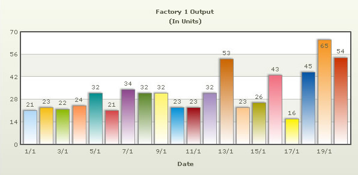

In our previous example, we had used FusionCharts XT to plot a chart using data stored in database. We will now extend that example itself to create a drill-down chart which can show more information.
Before you go further with this page, we recommend you to please see the previous sections, like Basic Examples, and Creating Data from Array, as we start off from concepts explained in those pages.
If you recall from previous example, we were showing the sum of factory output in a Pie chart as under:

In this example, we will extend this example, so that when users click a Pie slice for a factory, they can drill down to see date wise production for that factory.
To set up the pie chart in a away to enable links for drill-down involves just minor tweaking of our previous BasicDBExample.asp. We basically need to add the link attribute for each <set> element. We create a new page, Default.asp (in DB_DrillDown folder) from the previous page with the following code changes:
The code examples contained in this page are contained in Download Package > Code > ASPClass > DB_DrillDown folder.
<%@LANGUAGE="VBSCRIPT"%> <% option explicit %> <% ' We have included ../Includes/FusionCharts_Gen.asp, which contains ' FusionCharts ASP Class to help us easily embed charts ' We have also used ../Includes/DBConn.asp to easily connect to a database %> <!--#include file="../Includes/DBConn.asp"--> <!--#include file="../Includes/FusionCharts_Gen.asp"--> <HTML> <HEAD> <TITLE>FusionCharts XT - Database and Drill-Down Example</TITLE> <% 'You need to include the following JS file, if you intend to embed the chart using JavaScript. 'Embedding using JavaScripts avoids the "Click to Activate..." issue in Internet Explorer 'When you make your own charts, make sure that the path to this JS file is correct. Else, 'you will get JavaScript errors. %> <SCRIPT LANGUAGE="Javascript" SRC="../../FusionCharts/FusionCharts.js"> </SCRIPT> </HEAD> <BODY> <h4>Click on any pie slice to see detailed data.</h4> <% 'In this example, we show how to connect FusionCharts XT to a database. 'For the sake of ease, we have used an MySQL databases containing two tables. dim FC ' Create FusionCharts ASP class object set FC = new FusionCharts ' Set chart type to Pie 3D Call FC.setChartType("Pie3D") ' Set chart size Call FC.setSize("650","450") ' Set Relative Path of SWF file. Call FC.setSWFPath("../../FusionCharts/") dim strParam ' Define chart attributes strParam="caption=Factory Output report;subCaption=By Quantity;pieSliceDepth=30;numberSuffix= Units;decimals=0" ' Set chart attributes Call FC.setChartParams(strParam) ' Fetch all factory records creating SQL query dim strQuery strQuery = "select a.FactoryID, b.FactoryName, sum(a.Quantity) as total from Factory_output a, Factory_Master b where a.FactoryId=b.FactoryId group by a.FactoryId,b.FactoryName" Dim oRs 'Create the recordset to retrieve data Set oRs = Server.CreateObject("ADODB.Recordset") Set oRs = oConn.Execute(strQuery) 'Pass the SQL query result and Drill-Down link format to ASP Class Function 'this function will automatically add chart data from database 'The last parameter passed i.e., "Detailed.asp?FactoryId=##FactoryID##" 'drill down link from the current chart 'Here, the link redirects to another ASP file Detailed.asp 'with a query string variable -FactoryId 'whose value will be taken from the Query result created above. 'Any thing placed between ## and ## will be regarded 'as a field/column name in the SQL query result. 'value from that column will be assigned as the query variable's value 'Hence, for each dataplot in the chart the resultant query variable's value 'will be different if Not oRs.Bof then Call FC.addDataFromDatabase(oRs, "total", "FactoryName","","Detailed.asp?FactoryId=##FactoryID##") End If oRs.Close set oRs=Nothing 'Create the chart Call FC.renderChart(false) %> </BODY> </HTML>
As you can see in the code above, we are doing the following:
- Including the FusionCharts.js JavaScript class, and FusionCharts_Gen.asp to enable easy embedding of FusionCharts. DBConn.asp contains connection parameters to connect to database.
- Creating FusionCharts ASP class object for Pie 3D chart.
- Setting the relative path of chart SWF file.
- Storing the chart attributes in a variable strParam.
- Setting chart attributes using the setChartParams() function.
- Fetching the required records from database and store the output in oRs recordset.
- Calling the addDataFromDatabase() function to add chart data from database; we specify the link attribute which points to Detailed.asp page that contains the chart to show details.The last parameter passed, that is, "Detailed.asp?FactoryId=##FactoryID##" drill down link from the current chart. Here, the link redirects to another ASP file Detailed.asp with a querystring variable -FactoryId whose value will be taken from the Query result created above. Any thing placed between ## and ## will be regarded as a field or column name in the SQL query result. Value from that column will be dynamically assigned as the query variable's value. Hence, for each dataplot in the chart the resultant query variable's value will be different.
- Close database link.
- Render chart .
Please go through the FusionCharts ASP Class API Reference section to know more about the functions used in the above code.
Let's now shift our attention to Detailed.asp page.
The page Detailed.asp contains the following code:
<%@LANGUAGE="VBSCRIPT"%> <% option explicit %> <% 'We have included ../Includes/FusionCharts_Gen.asp, which contains 'FusionCharts ASP Class to help us easily embed charts 'We have also used ../Includes/DBConn.asp to easily connect to a database %> <!--#include file="../Includes/DBConn.asp"--> <!--#include file="../Includes/FusionCharts_Gen.asp"--> <HTML> <HEAD> <TITLE> FusionCharts XT - Database and Drill-Down Example </TITLE> <% 'You need to include the following JS file, if you intend to embed the chart using JavaScript. 'Embedding using JavaScripts avoids the "Click to Activate..." issue in Internet Explorer 'When you make your own charts, make sure that the path to this JS file is correct. 'Else, you will get JavaScript errors. %> <SCRIPT LANGUAGE="Javascript" SRC="../../FusionCharts/FusionCharts.js"> </SCRIPT> </HEAD> <BODY> <h4>Detailed report for the factory</h4> <% 'This page is invoked from Default.asp. When the user clicks a pie 'slice in Default.asp, the factory ID is passed to this page. We need 'to get that factory ID, get information from database and then show 'a detailed chart. 'Request the factory Id from Querystring dim FactoryId FactoryId = Request("FactoryId") dim FC ' Create FusionCharts ASP class object set FC = new FusionCharts ' Set chart type to Column 2D Call FC.setChartType("Column2D") ' Set chart size Call FC.setSize("600","300") ' Set Relative Path of SWF file. Call FC.setSWFPath("../../FusionCharts/") dim strParam ' Define chart attributes strParam="caption=Factory " & FactoryId & " Output;subcaption=(In Units);xAxisName=Date;labelStep=2" ' Set chart attributes Call FC.setChartParams(strParam) 'Now, we get the data for that factory 'storing chart values in 'Quantity' column and category names in 'DDate' dim strQuery strQuery = "select Quantity, format(DatePro,'dd/MM/yyyy') as DDate from Factory_Output where FactoryId=" & FactoryId 'For SQL Server 2000 Query 'strQuery = "select Quantity, convert(varchar,DatePro,103) as DDate from Factory_Output where FactoryId=" & FactoryId Dim oRs 'Create the recordset to retrieve data Set oRs = Server.CreateObject("ADODB.Recordset") Set oRs = oConn.Execute(strQuery) 'Pass the SQL query result to the FusionCharts ASP Class' function 'that will extract data from database and add to the chart. if not oRs.bof then Call FC.addDataFromDatabase(oRs, "Quantity", "DDate","","") end if oRs.Close set oRs=Nothing 'Create the chart Call FC.renderChart(false) %> </BODY> </HTML>
Let's analyze the steps involved in the above code:
- Including the FusionCharts.js JavaScript class, and FusionCharts_Gen.asp to enable easy embedding of FusionCharts.
- Requesting the factory ID for which we have to show detailed data. This data was sent to us as query string, as a part of pie chart link. FactoryId is stored in a variable FactoryId.
- Creating the FusionCharts ASP class object for Column 2D chart.
- Setting the relative path of chart SWF file.
- Storing the chart attributes in a variable, strParam.
- Setting the chart attributes through the setChartParams() function.
- Connecting to database through the connectToDB() function.
- Fetching required data from database and storing in a variable, $result.
- Passing result to the addDataFromDatabase() function that adds chart data from database.
- Closing database connection.
- Rendering chart.
Please go through the FusionCharts ASP Class API Reference section to know more about the functions used in the above code.
When you now run the app, you will see the detailed page as under:
